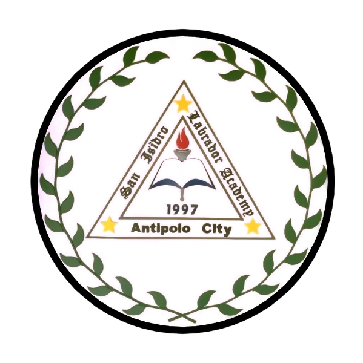
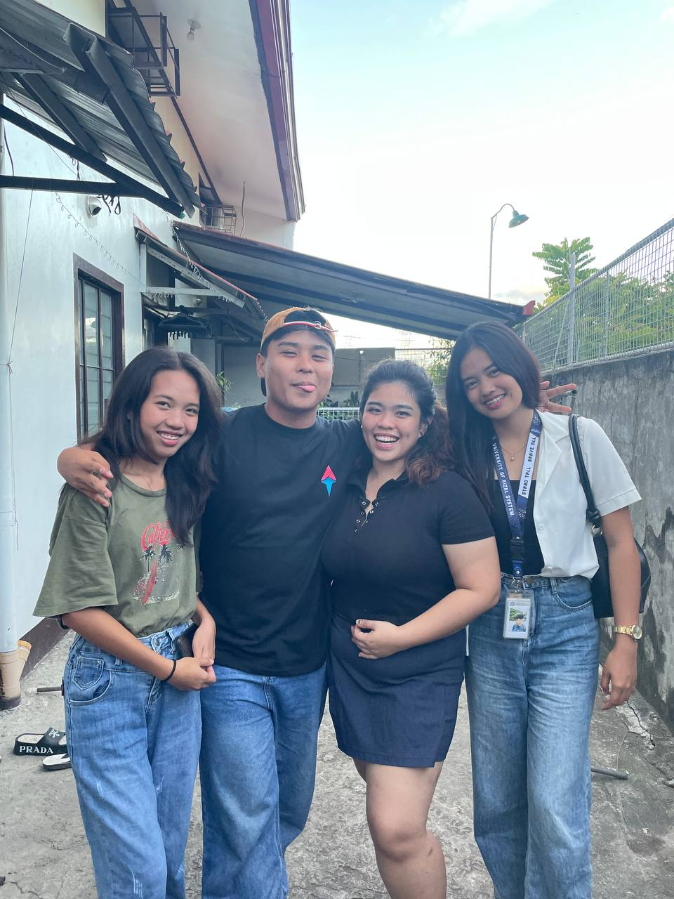
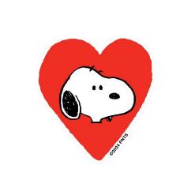
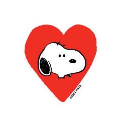

About Me
Get to know Des
Childhood

I grew up in Antipolo but we moved to Pililla when I turned 7. I like to play outside that's why I have lots of scar marks on my legs. I love watching disney movies, I used to collect dvds to watch those princess movies.
Education
Children's Garden School Antipolo
Preparatory
San Isidro Labrador Academy
Grade 1 - Grade 2
Pililla Elementary School Central
Grade 3 - Grade 6
Pililla National High School
Junior High - Senior High
University of Rizal System
Present
Current happenings



Now, there are lots of hard times but it was bearable since I met a lot of people. People who make days more lighter and brighter. I also lose a lot of friends but it's part of the journey.
 
